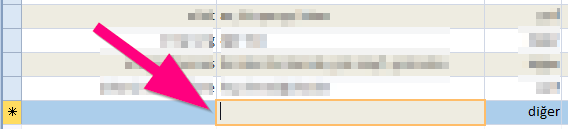
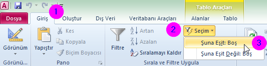

Dolusu boşu bol olan bir access tablosunda ne yapsam da sadece filtreyi kullanarak boş kayıtları listeletebilmek için kullanılabilecek bir ipucudur.
Access filtreleme yapacağı zaman o anda aktif olan hücrenin durumuna göre işlem yapıyor. Örneğin boşsa boş ya da boş olmayanlara göre, eğer kelime varsa o kelimeye eşit olanlar veya olmayanlar gibi. Şimdi kayıtların durumu çok belirsiz olduğundan boş satır bulmak biraz sıkıntı olabiliyor. Bu durum için hem kolay hem de etkili bir çözüm alternatifini görelim.
Yeni Kayıt Satırına Git
Access penceresinde kayıtların hemen altında kayıt ekleme düğmesi var, oraya tıklayarak hemen yeni kayıt satırına atlayabilirsiniz. Alternatif olarak da Ctrl + Aşağı Ok tuşlarına bastığınızda son kaydı seçer. Hemen altında da yeni kayıt satırı boş boş durmaktadır. Aşağı Ok tuşuna bir kez daha basarak yeni kayıt satırına inebilirsiniz.
Sütun Seçimi
Yeni kayıt ekleme satırında hangi sütundaki boş olan kayıtları listeleyeceksek o sütuna tıklıyoruz. Yoksa yanlış sonuçlar getirir/getirebilir ve kafanızı karıştırabilir. Mesela ben ikinci sütuna göre filtreleme yaptırmak istiyorum.
Filtreleme Yap
Bu adımda filtreleme işini hunharca yapabiliriz. Hemen Giriş sekmesindeki Sırala ve Filtre Uygula grubunda Seçim seçeneğinden boş olanları filtrelemesini istiyoruz.
{kind=link}
{kind=link}